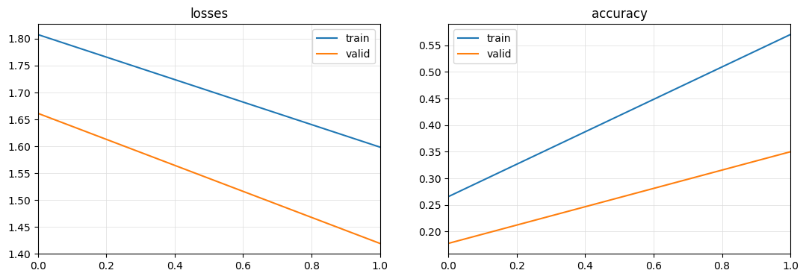
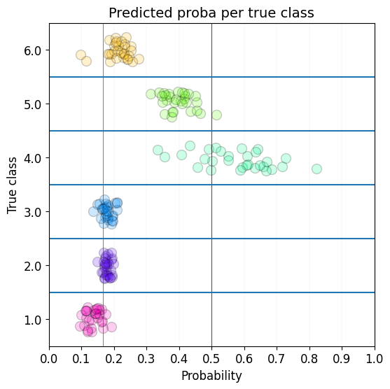
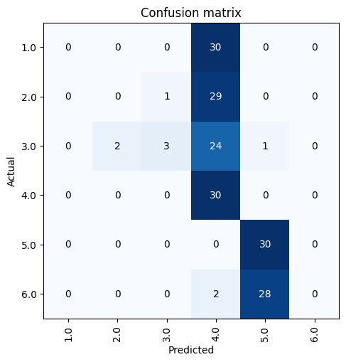
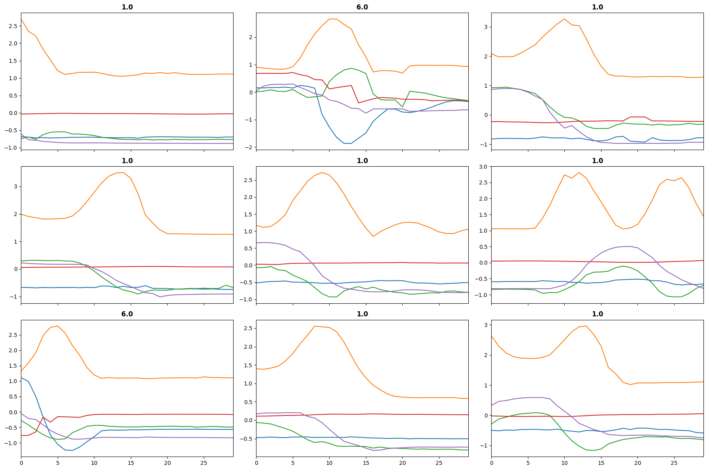
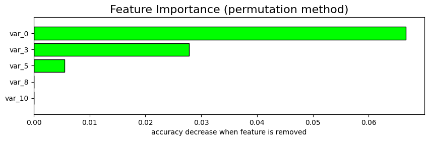
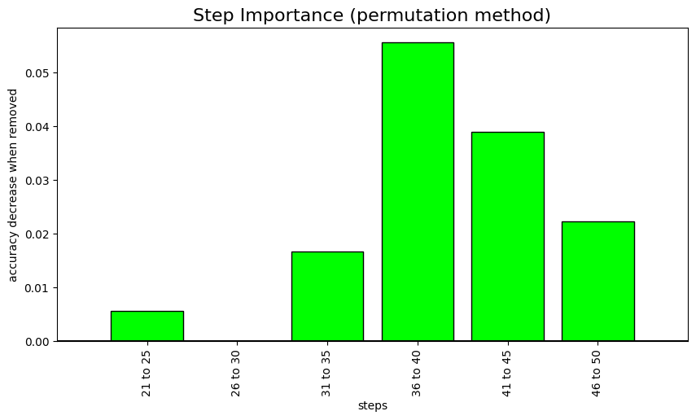

from tsai.data.external import get_UCR_data
from tsai.data.preprocessing import TSRobustScale, TSStandardize
from tsai.learner import ts_learner
from tsai.models.FCNPlus import FCNPlus
from tsai.metrics import accuracyAnalysis
fastai Learner extensions useful to perform prediction analysis.
Learner.show_probas
Learner.show_probas (figsize=(6, 6), ds_idx=1, dl=None, one_batch=False, max_n=None, nrows:int=1, ncols:int=1, imsize:int=3, suptitle:str=None, sharex=False, sharey=False, squeeze=True, width_ratios=None, height_ratios=None, subplot_kw=None, gridspec_kw=None)
| Type | Default | Details | |
|---|---|---|---|
| figsize | tuple | None | Width, height in inches of the returned figure |
| ds_idx | int | 1 | |
| dl | NoneType | None | |
| one_batch | bool | False | |
| max_n | NoneType | None | |
| nrows | int | 1 | Number of rows in returned axes grid |
| ncols | int | 1 | Number of columns in returned axes grid |
| imsize | int | 3 | Size (in inches) of images that will be displayed in the returned figure |
| suptitle | str | None | Title to be set to returned figure |
| sharex | bool | False | |
| sharey | bool | False | |
| squeeze | bool | True | |
| width_ratios | NoneType | None | |
| height_ratios | NoneType | None | |
| subplot_kw | NoneType | None | |
| gridspec_kw | NoneType | None | |
| Returns | (plt.Figure, plt.Axes) | Returns both fig and ax as a tuple |
Learner.plot_confusion_matrix
Learner.plot_confusion_matrix (ds_idx=1, dl=None, thr=0.5, normalize=False, title='Confusion matrix', cmap='Blues', norm_dec=2, figsize=(5, 5), title_fontsize=12, fontsize=10, plot_txt=True, **kwargs)
Plot the confusion matrix, with title and using cmap.
Learner.plot_top_losses
Learner.plot_top_losses (X, y, k:int=9, largest=True, bs:int=64, **kwargs)
| Type | Default | Details | |
|---|---|---|---|
| X | array-like object representing the independent variables | ||
| y | array-like object representing the target | ||
| k | int | 9 | Optional. #items to plot |
| largest | bool | True | Flag to show largest or smallest losses |
| bs | int | 64 | batch size |
| kwargs |
Learner.top_losses
Learner.top_losses (X, y, k:int=9, largest=True, bs:int=64)
| Type | Default | Details | |
|---|---|---|---|
| X | array-like object representing the independent variables | ||
| y | array-like object representing the target | ||
| k | int | 9 | Optional. #items to plot |
| largest | bool | True | Flag to show largest or smallest losses |
| bs | int | 64 | batch size |
Permutation importance
We’ve also introduced 2 methods to help you better understand how important certain features or certain steps are for your model. Both methods use permutation importance.
⚠️The permutation feature or step importance is defined as the decrease in a model score when a single feature or step value is randomly shuffled.
So if you using accuracy (higher is better), the most important features or steps will be those with a lower value on the chart (as randomly shuffling them reduces performance).
The opposite occurs for metrics like mean squared error (lower is better). In this case, the most important features or steps will be those with a higher value on the chart.
There are 2 issues with step importance:
- there may be many steps and the analysis could take very long
- steps will likely have a high autocorrelation
For those reasons, we’ve introduced an argument (n_steps) to group steps. In this way you’ll be able to know which part of the time series is the most important.
Feature importance has been adapted from https://www.kaggle.com/cdeotte/lstm-feature-importance by Chris Deotte (Kaggle GrandMaster).
Learner.feature_importance
Learner.feature_importance (X=None, y=None, partial_n:(<class'int'>,<class'float'>)=None, method:str='permutation', feature_names:list=None, sel_classes:(<class' str'>,<class'list'>)=None, key_metric_idx:int=0, show_chart:bool=True, figsize:tuple=None, title:str=None, return_df:bool=True, save_df_path:pathlib.Path=None, random_state:int=23, verbose:bool=True)
Calculates feature importance as the drop in the model’s validation loss or metric when a feature value is randomly shuffled
| Type | Default | Details | |
|---|---|---|---|
| X | NoneType | None | array-like object containing the time series. If None, all data in the validation set will be used. |
| y | NoneType | None | array-like object containing the targets. If None, all targets in the validation set will be used. |
| partial_n | (<class ‘int’>, <class ‘float’>) | None | # (int) or % (float) of used to measure feature importance. If None, all data will be used. |
| method | str | permutation | Method used to invalidate feature. Use ‘permutation’ for shuffling or ‘ablation’ for setting values to np.nan. |
| feature_names | list | None | Optional list of feature names that will be displayed if available. Otherwise var_0, var_1, etc. |
| sel_classes | (<class ‘str’>, <class ‘list’>) | None | classes for which the analysis will be made |
| key_metric_idx | int | 0 | Optional position of the metric used. If None or no metric is available, the loss will be used. |
| show_chart | bool | True | Flag to indicate if a chart showing permutation feature importance will be plotted. |
| figsize | tuple | None | Size of the chart. |
| title | str | None | Optional string that will be used as the chart title. If None ‘Permutation Feature Importance’. |
| return_df | bool | True | Flag to indicate if the dataframe with feature importance will be returned. |
| save_df_path | Path | None | Path where dataframe containing the permutation feature importance results will be saved. |
| random_state | int | 23 | Optional int that controls the shuffling applied to the data. |
| verbose | bool | True | Flag that controls verbosity. |
Learner.step_importance
Learner.step_importance (X=None, y=None, partial_n:(<class'int'>,<class'float'>)=None, method:str='permutation', step_names:list=None, sel_classes:(<class'str'>,<class'list'>)=None, n_steps:int=1, key_metric_idx:int=0, show_chart:bool=True, figsize:tuple=(10, 5), title:str=None, xlabel=None, return_df:bool=True, save_df_path:pathlib.Path=None, random_state:int=23, verbose:bool=True)
Calculates step importance as the drop in the model’s validation loss or metric when a step/s value/s is/are randomly shuffled
| Type | Default | Details | |
|---|---|---|---|
| X | NoneType | None | array-like object containing the time series. If None, all data in the validation set will be used. |
| y | NoneType | None | array-like object containing the targets. If None, all targets in the validation set will be used. |
| partial_n | (<class ‘int’>, <class ‘float’>) | None | # (int) or % (float) of used to measure feature importance. If None, all data will be used. |
| method | str | permutation | Method used to invalidate feature. Use ‘permutation’ for shuffling or ‘ablation’ for setting values to np.nan. |
| step_names | list | None | Optional list of step names that will be displayed if available. Otherwise 0, 1, 2, etc. |
| sel_classes | (<class ‘str’>, <class ‘list’>) | None | classes for which the analysis will be made |
| n_steps | int | 1 | # of steps that will be analyzed at a time. Default is 1. |
| key_metric_idx | int | 0 | Optional position of the metric used. If None or no metric is available, the loss will be used. |
| show_chart | bool | True | Flag to indicate if a chart showing permutation feature importance will be plotted. |
| figsize | tuple | (10, 5) | Size of the chart. |
| title | str | None | Optional string that will be used as the chart title. If None ‘Permutation Feature Importance’. |
| xlabel | NoneType | None | Optional string that will be used as the chart xlabel. If None ‘steps’. |
| return_df | bool | True | Flag to indicate if the dataframe with feature importance will be returned. |
| save_df_path | Path | None | Path where dataframe containing the permutation feature importance results will be saved. |
| random_state | int | 23 | Optional int that controls the shuffling applied to the data. |
| verbose | bool | True | Flag that controls verbosity. |
dsid = 'NATOPS'
X, y, splits = get_UCR_data(dsid, split_data=False)
tfms = [None, [TSClassification()]]
batch_tfms = TSRobustScale()
batch_tfms = TSStandardize()
dls = get_ts_dls(X, y, splits=splits, sel_vars=[0, 3, 5, 8, 10], sel_steps=slice(-30, None), tfms=tfms, batch_tfms=batch_tfms)
learn = ts_learner(dls, FCNPlus, metrics=accuracy, train_metrics=True)
learn.fit_one_cycle(2)
learn.plot_metrics()
learn.show_probas()
learn.plot_confusion_matrix()
learn.plot_top_losses(X[splits[1]], y[splits[1]], largest=True)
learn.top_losses(X[splits[1]], y[splits[1]], largest=True)

(TensorBase([2.3490, 2.3218, 2.2956, 2.2231, 2.1906, 2.1742, 2.1699, 2.1641,
2.1579]),
[129, 149, 56, 9, 166, 116, 154, 110, 104])

learn.feature_importance()X.shape: (180, 24, 51)
y.shape: (180,)
Selected metric: accuracy
Computing feature importance (permutation method)...
0.00% [0/3 00:00<?]
0.00% [0/3 00:00<?]
0.00% [0/3 00:00<?]
0.00% [0/3 00:00<?]
0.00% [0/3 00:00<?]

| Feature | accuracy | accuracy_change | |
|---|---|---|---|
| 0 | var_0 | 0.261111 | 0.066667 |
| 1 | var_3 | 0.300000 | 0.027778 |
| 2 | var_5 | 0.322222 | 0.005556 |
| 3 | BASELINE | 0.327778 | -0.000000 |
| 4 | var_8 | 0.327778 | -0.000000 |
| 5 | var_10 | 0.327778 | -0.000000 |
learn.step_importance(n_steps=5); 0 step: BASELINE accuracy: 0.327778
0.00% [0/3 00:00<?]
1 step: 21 to 25 accuracy: 0.322222 2 step: 26 to 30 accuracy: 0.327778
0.00% [0/3 00:00<?]
3 step: 31 to 35 accuracy: 0.311111 4 step: 36 to 40 accuracy: 0.272222
0.00% [0/3 00:00<?]
5 step: 41 to 45 accuracy: 0.288889 6 step: 46 to 50 accuracy: 0.305556

You may pass an X and y if you want to analyze a particular group of samples:
learn.feature_importance(X=X[splits[1]], y=y[splits[1]])If you have a large validation dataset, you may also use the partial_n argument to select a fixed amount of samples (integer) or a percentage of the validation dataset (float):
learn.feature_importance(partial_n=.1)learn.feature_importance(partial_n=100)